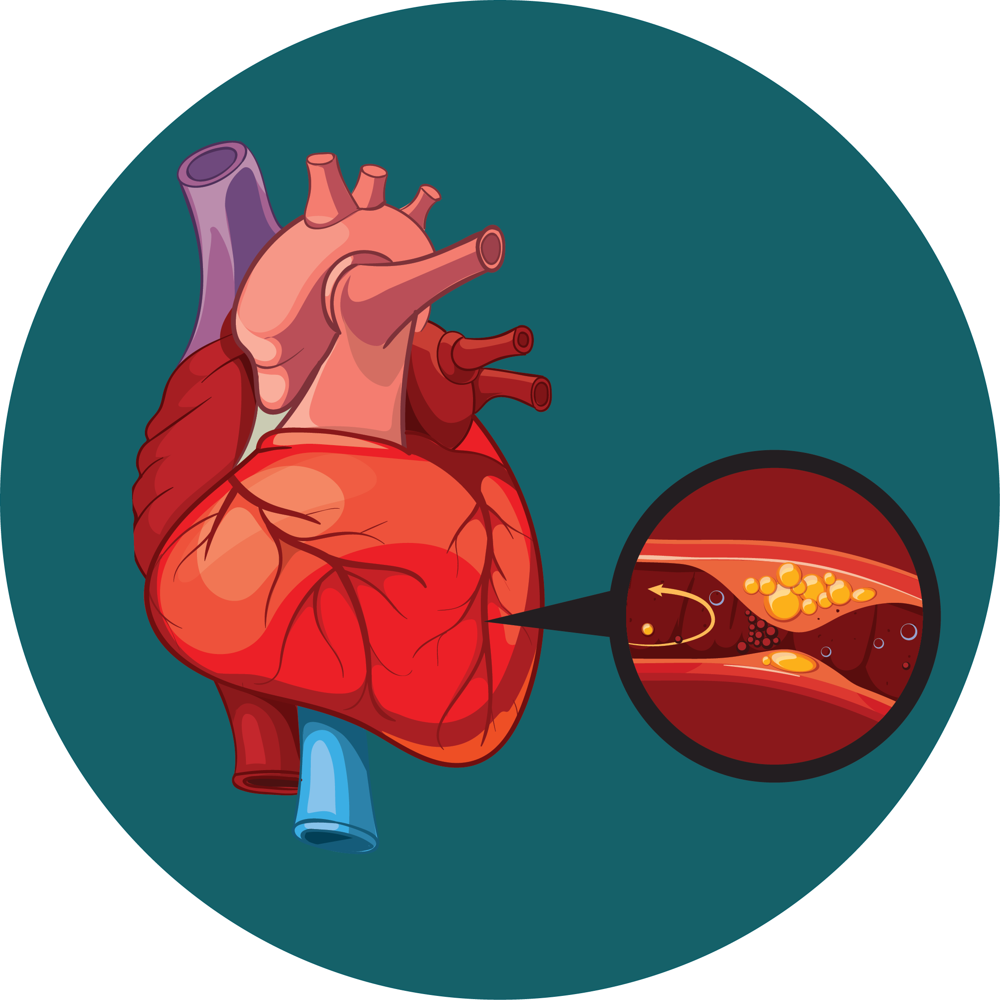
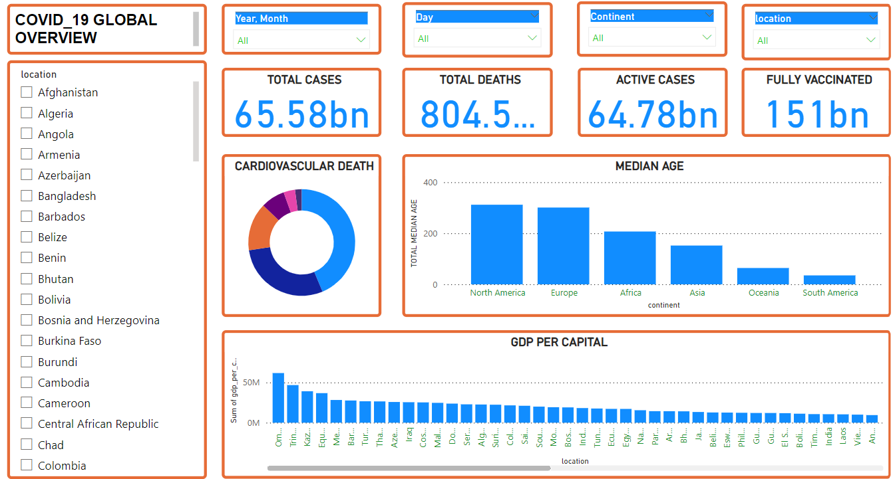

I utilized sophisticated data analysis methods to examine a comprehensive dataset of bakery sales,
uncovering trends, patterns, and key factors influencing customer behavior and product demand.
This analysis has contributed to a deeper understanding of our bakery's operations and provided valuable
insights for optimizing sales strategies.

I employed advanced data analytics to analyze a comprehensive dataset of food prices across Africa,
identifying trends, patterns, and factors influencing price fluctuations.

I developed a heart disease prediction model using a variety of classification algorithms trained on a health dataset.
Through rigorous evaluation, I determined the optimal model for accurately identifying heart disease cases.

I leveraged sophisticated data analytics techniques to examine a comprehensive dataset of COVID-19 cases, identifying trends, patterns,
and factors influencing the spread and impact of the pandemic. This analysis has provided valuable insights for understanding the disease's
dynamics and informing public health policies.
"I employed a comparative study of regression algorithms to build a predictive model for Boston house prices.
Through rigorous evaluation, I determined the optimal algorithm for accurately forecasting property values.

I conducted an in-depth analysis of aircraft accident data using [specific analytical methods, e.g., statistical analysis,
data visualization, and pattern recognition] to identify potential risk factors and trends associated with accidents.